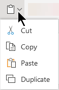
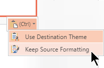

Copying and pasting in PowerPoint for the web differs from copying and pasting in the PowerPoint desktop application because of certain web browser limitations.
You can copy and paste pictures from one slide to another in the same presentation or another presentation. You can also copy a picture from another app, such as Word for the web, and then paste it in PowerPoint for the web.
Select the image you want to copy, and then on the Home tab, select the Clipboard button and then select Copy.

Click where you want to insert the text, and on the Home tab, select the Clipboard button and then select Paste.
If you're prompted for access to the Clipboard, click Allow Access.
You can also copy pictures from web sites and paste them to your slides as long as you have a license for the image:
Right-click the image on the web site and select the Copy command, then switch to PowerPoint for the web to paste the image on your slide.
PowerPoint for the web doesn’t support pasting pictures that are copied from Outlook. If there’s a picture in Outlook that you want to use in PowerPoint for the web, save the picture to your computer, then go to Insert > Pictures in PowerPoint for the web.
Shortcut key for Paste: Ctrl + V
Select the text you want to copy, and then on the Home tab, select the Clipboard button and then select Copy.
Click where you want to insert the text, and on the Home tab, select the Clipboard button and then select Paste.
If you're prompted for access to the Clipboard, click Allow Access.
Shortcut key for Paste Unformatted: Ctrl + Shift + V
Select the text you want to copy, and then on the Home tab, select the Clipboard button and then select Copy.
Click where you want to insert the unformatted text, and on the Home tab, select the Clipboard button and then select Paste Text Only.
Currently, Paste Text Only is only available in Chrome, Microsoft Edge, and Internet Explorer. And for Chrome, you need an Office extension to use this command in PowerPoint for the web.
In the thumbnail pane on the left, select the slide or slides you want to copy, and then on the Home tab, select the Clipboard button and then select Copy.
In the thumbnail pane, select the slide you want to insert after, and then on the Home tab, select the Clipboard button and then select Paste.
If the slide or slides you copied come from a different presentation and you want to keep their original formatting, Click the (Ctrl) button that pops up at the bottom-right corner of the pasted slide, and select Keep Source Formatting.

When you're copying-and-pasting slides within the same presentation, Keep Source Formatting currently isn't supported.